This style guide establishes the visual identity for the Byrne Journey Tarot deck. It documents color palettes, visual approaches, and reusable elements while allowing each card to be uniquely interpreted.
Theme: David Byrne's evolution from anxious observation (early Talking Heads) to embodied joy and civic participation (American Utopia era). The visual language progresses from cool/static/geometric to warm/dynamic/organic.
The Major Arcana (22 cards, numbered 0-21) follows a color journey from cool documentary grays and blues to warm, vibrant oranges and reds. This mirrors Byrne's artistic evolution.
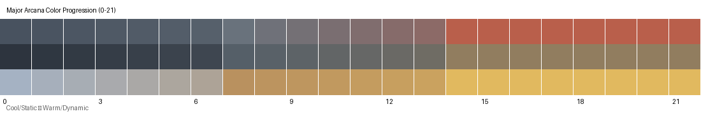
Aesthetic: Cool palettes, static compositions, documentary feel
Reference: Talking Heads 77, Fear of Music, Remain in Light (early)
Themes: Observation, alienation, anxious self-awareness, systems as comfort
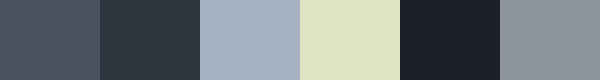
Colors (left to right): primary, secondary, accent, highlight, shadow, ground
Aesthetic: Transitional, warmer tones emerging, more complexity
Reference: Remain in Light (late), Speaking in Tongues, world music collaborations
Themes: Discovery, polyrhythm, beginning to connect, systems observed in motion
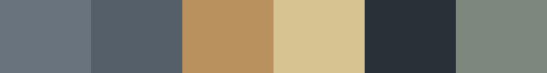
Colors (left to right): primary, secondary, accent, highlight, shadow, ground
Aesthetic: Warm, vibrant, dynamic, embodied
Reference: American Utopia, civic engagement, optimistic collaboration
Themes: Joy, presence, collective movement, sincere participation
Colors (left to right): primary, secondary, accent, highlight, shadow, ground
Each suit represents a distinct visual world with its own complete aesthetic. These are not variations on a theme—they are separate approaches to seeing.
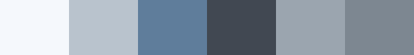
Colors: primary, secondary, accent, grid, shadow, frame
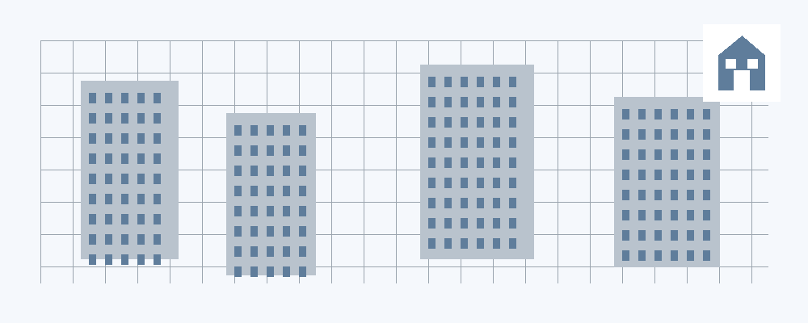
Keywords: Observation, analysis, blueprints, containment
Visual Style: Clean geometric compositions, architectural drawings,
grids, measured spaces, documentation aesthetic
Colors: primary, secondary, accent, flow, shadow, pattern
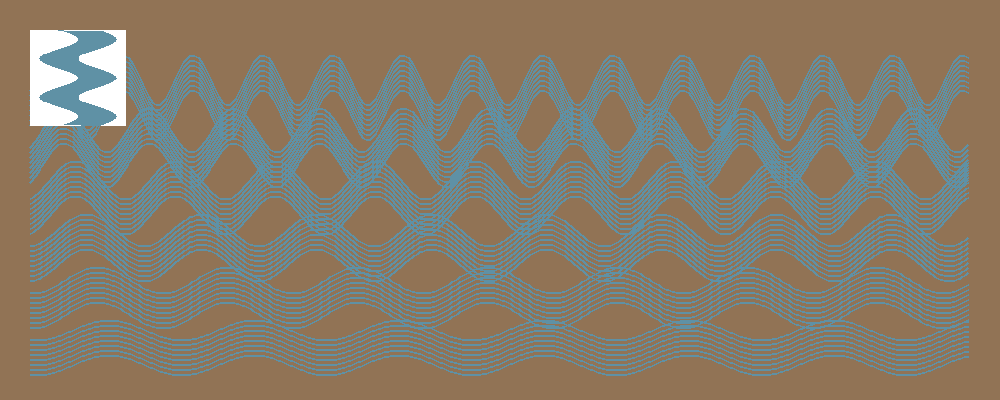
Keywords: Cycles, patterns, rhythm, natural systems
Visual Style: Organic patterns, polyrhythmic layering,
warm earth tones, systems in motion viewed from above
Colors: primary, secondary, accent, dialogue, shadow, text
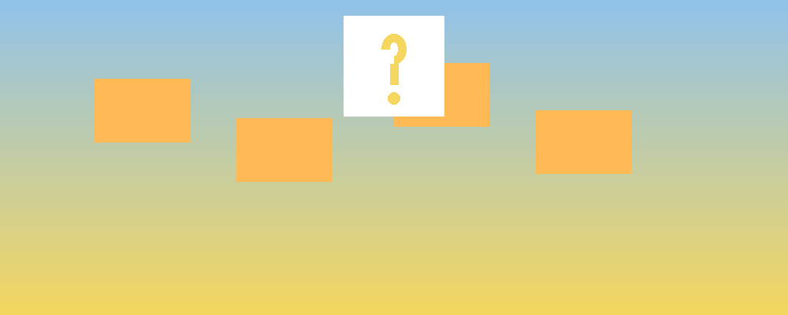
Keywords: Inquiry, civic engagement, dialogue, reasons to be cheerful
Visual Style: Bright optimistic palettes (yellows, sky blues),
conversational compositions, open inviting spaces
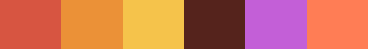
Colors: primary, secondary, accent, electric, shadow, heat
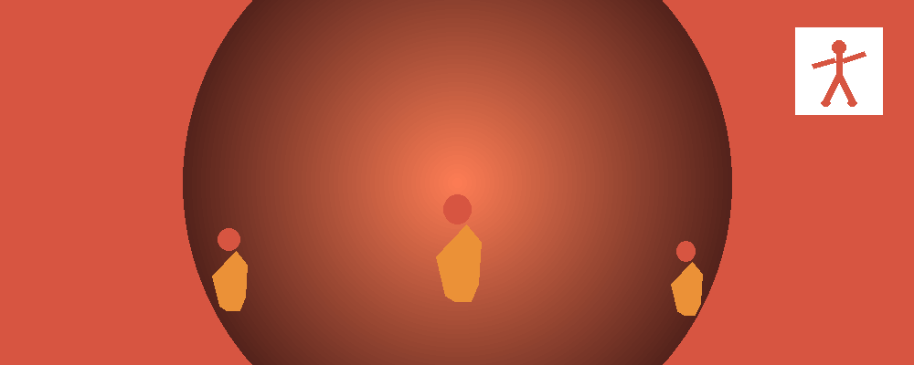
Keywords: Embodied joy, collective movement, groove, presence
Visual Style: Dynamic motion, vibrant warm colors (reds, oranges, golds),
energy and heat visible, the view from inside the groove
Each suit has a symbol that can be incorporated into cards as needed. These can be rendered in different styles and scales depending on the card.
Simple house with triangular roof
Vertical flowing water
Question mark
Dancing figure
How people appear in this deck carries meaning. Body language, scale, and detail level all communicate the relationship between observer and observed, self and other.
Byrne (when depicted as himself):
Audience/Crowd:
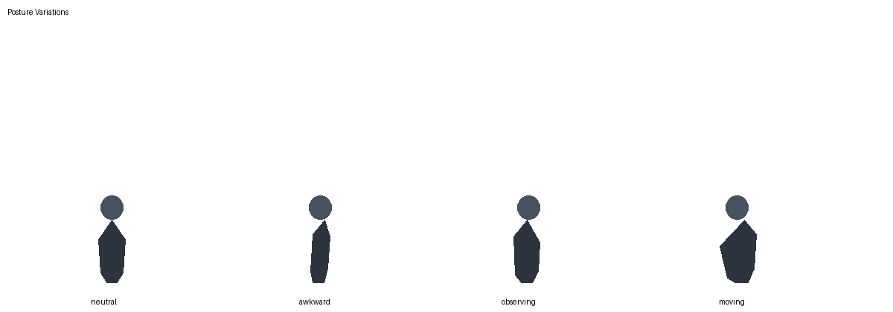
Different postures communicate different states: neutral, awkward/anxious, observing, moving/dancing.
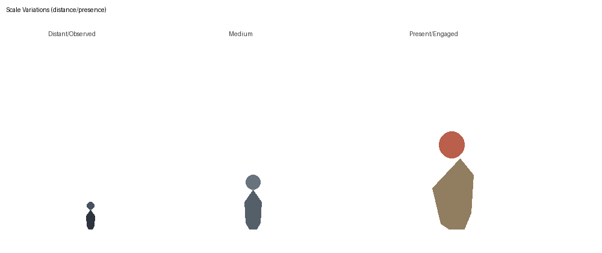
Scale indicates relationship to the scene. Small/distant = observed from outside; large/present = engaged and embodied.
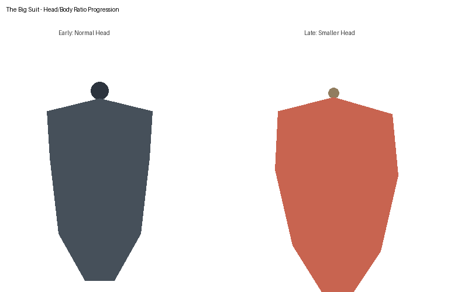
When Byrne appears as a character, the oversized boxy jacket is the key identifier. Purpose: The big suit makes the head smaller relative to the body—representing escape from cognitive prison (less head dominance, more embodied presence).
Key technique: As Byrne progresses through the deck, the head gets smaller and/or the suit polygon gets bigger, changing the head-to-body ratio. The polygon shape itself conveys posture and movement—boxy and upright (early) to dynamic and expressive (late).
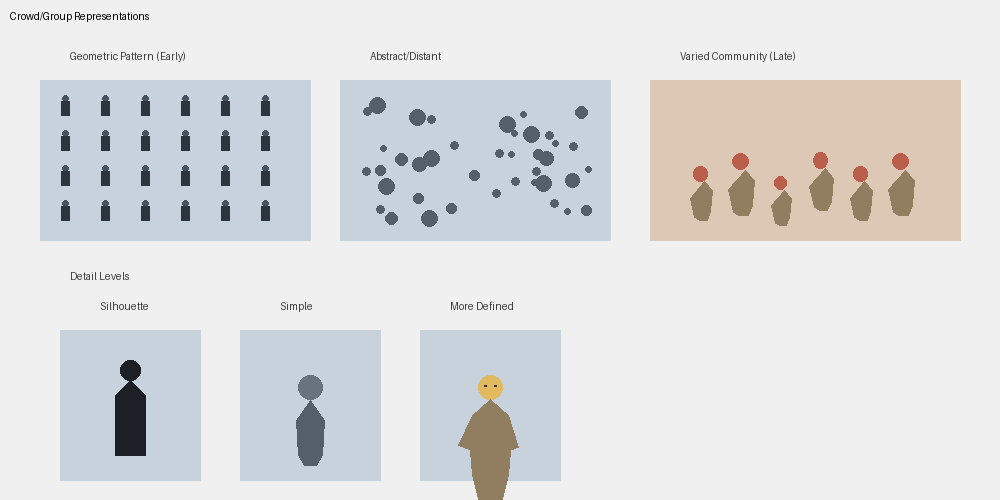
Multiple ways to represent groups: geometric patterns (observed), abstract dots (distant), varied figures (community), and different detail levels (silhouette to defined).
Reusable building blocks for constructing card scenes. These are tools and reference examples, not templates to copy-paste. Each use should be adapted to the specific card's needs.
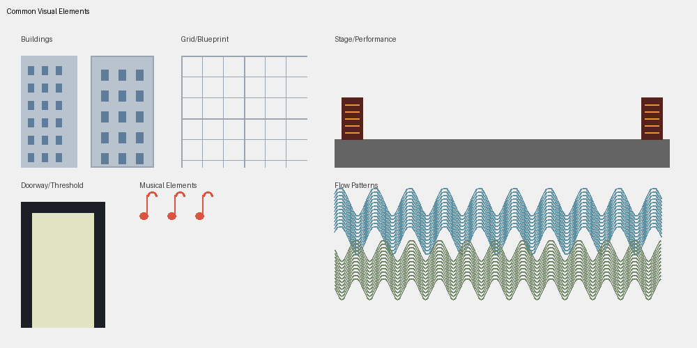
Common kinds of spaces that recur across the deck. Not specific places, but spatial archetypes that carry meaning.
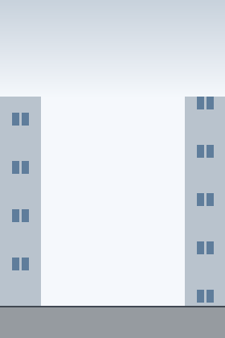
Suggestive container showing urban context. Buildings frame edges, leaving center open for figures and action. Sky, ground, architectural hints.
Used in: Early cards, Structures suit
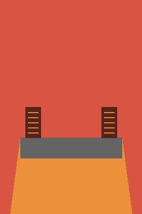
Raised platform, lighting, equipment, audience space.
Used in: Late cards, Dance suit
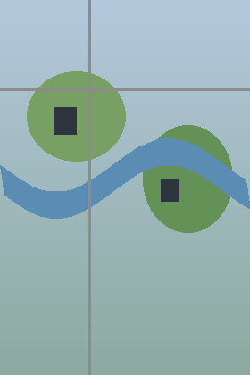
Looking down from above: nature (greens, blues) intersecting with sparse human structures. Detached observation of the relationship between natural and built.
Used in: Early-mid cards, "The Big Country"
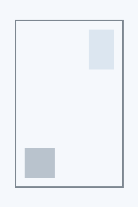
Rooms with objects, organized space, windows looking out.
Used in: "Don't Worry About the Government", Structures
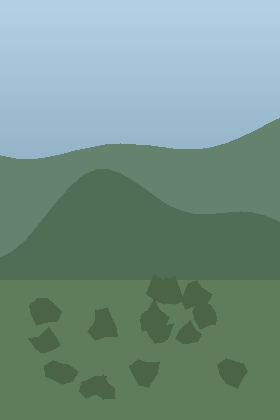
Rivers, organic flows, patterns in nature, earth tones.
Used in: Rivers suit, transition cards
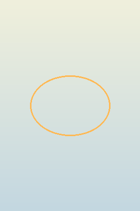
Open inclusive composition, bright and welcoming.
Used in: Late cards, Curiosity and Dance suits
When creating a card:
byrne_visual_toolkit.py) as a helper library